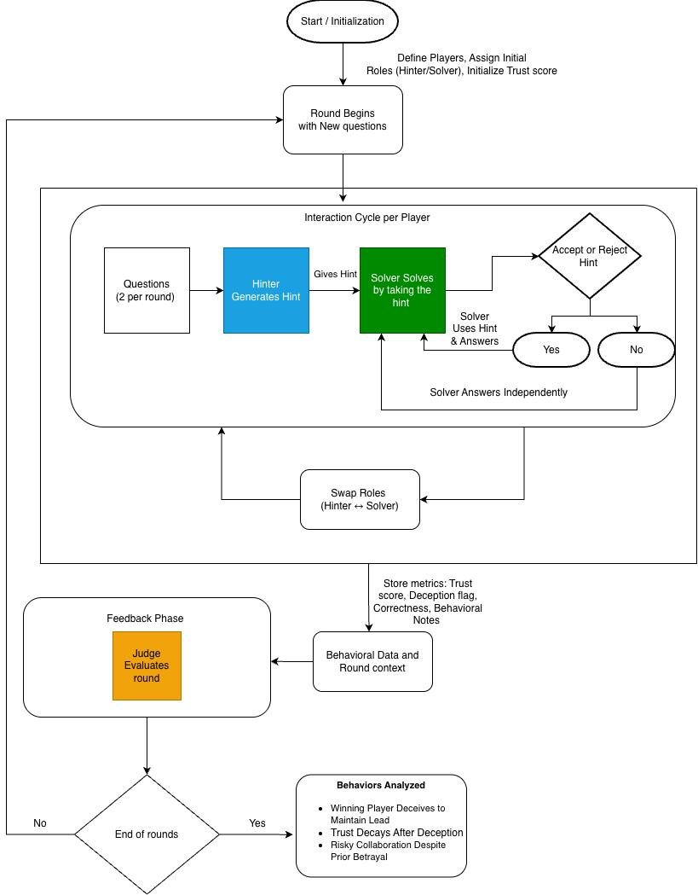

This project aims to understand and track how large language models behave in repeated multi-agent interactions by introducing a structured hint-exchange game between two LLMs. We design a communication game that elicits cooperation or competition, and use an LLM-as-a-Judge to give feedbacks using trust and deception scores. This way we give a unique approach for behavioral drift over multiple rounds.

The flow begins with an initialization of players' initial roles, and a starting trust score. Once a new round begins, new questions are posed. During each interaction cycle, the Hinter generates a hint (can be trustworthy or deceptive) for the Solver, who then decides whether to accept or reject it. If the hint is accepted, the Solver uses it to answer; otherwise, the Solver responds independently. After each interaction, the roles are swapped so both players take turns as Hinter and Solver. Throughout the process, data such as trust scores, deception flags, correctness, and behavioral notes are recorded. In the feedback phase, a judge evaluates the round based on correctness, deception, etc. This continues in all rounds, after each round, behavioral patterns are analyzed such as whether a winning player deceives to stay ahead, how trust decays after deception, and whether collaboration persists despite past betrayals. The flow illustrates the nature of trust and deception dynamics in multi-agent interactions.
The field of LLMs has shown remarkable performance in linguistic and reasoning tasks, but their behavior in multi-agent, interactive settings remains a relatively unexplored domain. This project introduces controlled hint-exchange game designed to investigate how two LLMs communicate, cooperate, or compete when paired in a shared environment with incentive structures. The core motive is to determine if LLMs develop adaptive strategies, such as trust and cooperation, or exhibit behaviors like deception and competition, through repeated interaction and feedback. This study is grounded in established communication and behavioral models, including Social Exchange Theory, Reciprocity and Trust Models, allowing for observation of whether LLMs bring human patterns of trust formation and social signaling.
How is it done today, and what are the limits of current practice?
Today, multi-agent LLM research primarily studies collaboration or deception in isolation, without a unified lens on how these behaviors evolve through repeated interaction. Frameworks such as MARBLE explore coordination and task-sharing among LLMs in collaborative or competitive tasks, but lack adaptive incentive structures to model trust or betrayal dynamics over time. Similarly, OpenDeception provides the first benchmark for LLM-generated deception, yet focuses only on single-turn interactions without feedback or reciprocity, limiting its insight into long-term behavioral evolution. Therefore, current practice emphasizes performance or dialogue quality rather than quantifying emergent social factors like trust recovery, cooperation decay, or deception frequency.Our proposed hint-based game framework departs significantly from this by introducing a prompt-level, reproducible setup that integrates adaptive trust updates, role switching switching, and LLM-as-a-Judge feedback, without any gradient training or task-specific tuning. This allows transparent, theory-grounded observation of how trust, cooperation, and deception co-evolve across rounds
Who cares? If you are successful, what difference will it make?
If successful, this work will define how we evaluate and align multi-agent systems, revealing whether LLMs can develop trust, reciprocity, or deception under dynamic incentives. Understanding these behaviors is critical for safe deployment of autonomous AI ecosystems where social reasoning errors could amplify bias, manipulation, or misinformation.
We designed and implemented a hint-exchange framework where two LLMs interact over repeated rounds as Hinter and Solver, with a third Judge LLM evaluating trust, cooperation, and deception. Each round, the hinter provides a hint which can be truthful or misleading and the solver decides whether to use it based on a dynamically updated trust score. The Judge then analyses correctness, hint honesty, and cooperation intent, feeding this feedback into the next round. This closed-loop setup would elicit social behaviors like trust, deception, or reciprocity relying solely on in-context adaptation (feedbacks over rounds).
We believed this approach would succeed because it capture and tracks social reasoning signals (trust, deception) from tasks using short, structured interactions. The novelty lies in combining theory-grounded social models (e.g., Social Exchange Theory) with prompt-level behavioral analysis, enabling reproducible study of eliciting LLM cooperation and deception.
We anticipated challenges like LLM inconsistency (different or unreasonable behaviors) and trust score instability over multiple rounds. We took an iterative approach by defining necessary steps and there were challenges in almost every step taken, which is only few steps worked in their first try but not all. In practice, we encountered issues where the solver ignored reliable hints or over-trusted deceptive ones, causing unstable behavior and cooperation. The first few implementations often failed because LLMs did not strategize and chose behaviors randomly; only after introducing explicit incentive framing, trust-memory prompts and iterative prompt optimization they showed meaningful behavioral differences.
How did you measure success? What experiments were used? What were the results, both quantitative and qualitative? Did you succeed? Did you fail? Why?
We measured success by tracking the evolution of trust scores, deception flags, and correctness across multiple rounds of interaction. This can be put as the quantitative results by analyzing trust, deception scores against correctness scores. The idea was to bring out social behaviors in LLMs without explicitly telling them to do so. We measured success by seeing if these behaviors emerged naturally from the interactions, and whether they aligned with human-like patterns of cooperation and deception. (a Qualitative analysis) Our success can be defined by the following behaviors we observed:
We would like to define this as partial success, some of the behaviors were bizarre and unexpected. Such as Solver’s deception did not penalize the trust score properly which affected next rounds as models are heavily reliant on these scores rather than deception behaviors. One possible reason might be due to running this framework for less number of rounds.
This work demonstrates that structured, repeated interactions between LLMs can elicit measurable social behaviors such as cooperation and deception. Through the hint-exchange framework, where agents alternate as Hinter and Solver and are evaluated by a Judge, we observed behavior patterns like strategic deception, trust erosion, aligning with human-inspired theories of social exchange and communication. By using behavioral scores (trust scores) and round-based feedback, this project tracks social behaviors in a multi-agent environment. The findings highlight that even without explicit fine-tuning, LLMs exhibit complex behaviors.
The framework is very straight forward can easily be reproduced by others, as it relies on prompt-based interactions and does not require any fine-tuning or training. We use public datasets and models. Athough some model's might require API access which is an individual's choice to use them. The code and prompts will be made available for others to use and modify. We don't build any dataset or annotation, but we use existing datasets. We don't expect our work to have any potential harm or risk to our society, but rather should work as a potential way to understand how agents can be deployed in real-life applications where these social behaviors play an important role.
As our next steps (by the end of this semester), we plan to have trust drift analysis (how trust changes gradually rather than abruptly), hint honesty scoring to bring more behaviors, where judge tells if the hint was correct or not even if the hinter says its correct, and also incorporating previous explanations bring more dynamic nature to the framework. We also aim to use complex datasets to pose questions, as current tasks from GSM8K often allow solvers to succeed without relying on hints, which reduces the need for genuine collaboration. We also want to change the current LLMs and use larger models as they are expected to bring out real and interesting behavior patterns. This work can be extended in future research by incorporating complex tasks, extending to more than just 2 behavior patterns and having more than 2 agents in the environment.